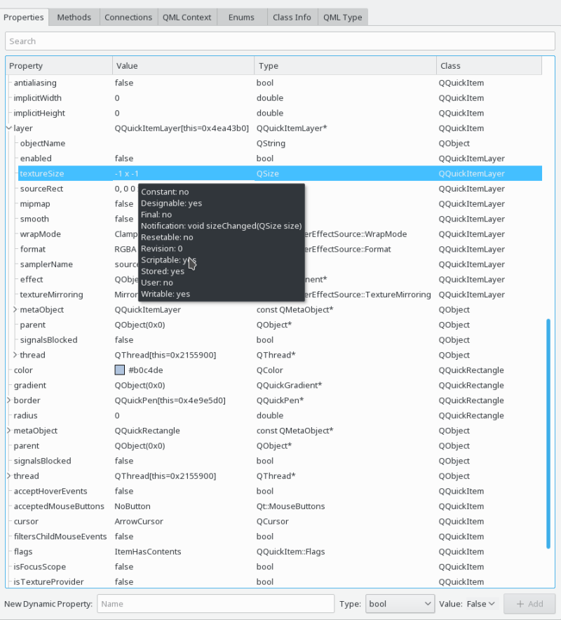

The properties view is the most general way of inspecting a selected objects, and is available for all types of objects.

The view consists of four columns:
Depending on the source of the property, additional information are available in a tooltip, as seen in the above screenshot. Depending on the type of the property value, object navigation actions are available in the context menu, typically for properties containing references to other objects.
Properties containing container or object values can often be expanded to inspect their content in more detail.
Properties are taken from the following sources, based on the type of the object you have selected:
Additionally the following container types are supported, and exapanded depending on their content:
As far as supported by a specific property, property values can be edited, with immediate effect on the application. This can generally been done by double-clicking into the value column. For some complex types, an extended editing dialog is available, reachable via the "..." button on the right side of the value editing field.
The following types can be edited:
Additionally it is possible to add dynamic properties to a QObject instance with the controls at the bottom of the property view. Existing dynamic properties can be edited as any other property, and can be removed via the context menu.
The following examples make use of the properties view: